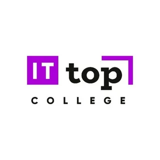

01
ОНЛАЙНОТБОРОЧНЫЕ
Групповые и отборочные матчи проходят онлайн. Команды играют из дома с соблюдением регламента.
ONLINE STAGE ↗Собери команду. Пройди онлайн-отборочные. Сразись за чемпионство в гранд-финале на площадке колледжа.
Онлайн-этапы — Counter-Strike 2. Гранд-финал в колледже предварительно планируется в CS:GO.
Групповые и отборочные матчи проходят онлайн. Команды играют из дома с соблюдением регламента.
ONLINE STAGE ↗Гранд-финал планируется провести в Counter-Strike: Global Offensive (CS:GO) на компьютерах колледжа. Окончательная дисциплина финала будет подтверждена организаторами.
LAN FINAL ↗Пять основных игроков и запасные. К участию допускаются только студенты колледжа.
На финал можно принести наушники, мышь, коврик и клавиатуру. Остальное оборудование предоставляет колледж.
Читы и запрещённые сторонние программы недопустимы. Нарушение ведёт к дисквалификации команды.
Команды, занявшие первое и второе места, получают командные призы.
Заявка подаётся капитаном команды. Укажи название, пять основных игроков и, при необходимости, до двух запасных.
Регистрация предназначена только для студентов колледжа. После отправки организаторы проверят заявку.

Турнир организует студенческий актив колледжа. Онлайн-отборочные и очный гранд-финал объединят команды в борьбе за победу.